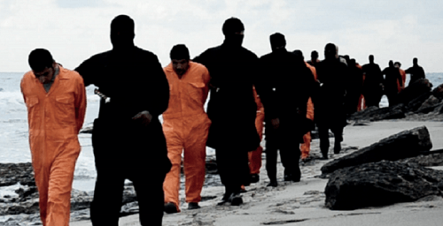

< < < Back
Christians In Europe Need Safe Spaces From Muslims – Return Of Kings
There have been numerous reports of Muslim migrants harassing and even acting violent against their Christian counterparts. Whether travelling on boats over the Mediterranean or living in refugee camps, Christians find themselves in a minority and under attack.
The governments of Europe should take responsibility for their bad policies and act soon to protect Christian immigrants. If something isn’t done about the issue, the genocide of Christians and other non-Muslims in the Middle East might spill over to Europe.
Killed for their faith
A group of Christian asylum seekers has had to move from their home after fundamentalist Muslims harassed and threatened them. They were living together in a facility for asylum seekers in Sweden, but two of the Christian families decided to move away on account of a group of aggressive Syrians.
The majority of the 80 asylum seekers living at the facility were Syrians. The few Christians were not allowed to wear their religion’s symbols, like crosses around their necks. They also weren’t allowed in communal areas if Muslims were present. It got to the point where the Christians feared for their own safety.
At least Angela Merkel is having a good time.
The majority of asylum seekers overall are Muslim, and this is not the first time the Migration Agency has received complaints about religious intolerance at their facilities. In Germany, Christian immigrants have also had troublesome encounters with Muslims. An Iraqi immigrant, called Said, says he can’t be open about his Christian faith. He lives in a facility were most of the asylum seekers are Syrian Sunnis.
They woke me up before dawn during Ramadan and said that I should eat before the sun comes up. If I refused, they called me “Kuffar,” non-believer.
Many Christians coming to Germany can testify to how Muslims are trying to enforce Sharia law among asylum seekers. Christians who have converted from Islam are the most endangered group.
There has also been reports of Muslim attacks on the boats coming to Europe over the Mediterranean. In one case, they threw twelve Christians overboard when they refused to pray to the “right” god. “Here, we only pray to Allah,” the Muslims said before their murdering rampage.
In Syria and Iraq, Christians along with Yazidis and other religious minorities have been under attack for many years. Thousands of women have been taken as sex slaves. Christian women and men are raped and beheaded by ISIS jihadists, when they refuse to convert.
The Assyrian Christians in Iraq have a history of inhabiting the region dating back 6.700 years. They were among the first in the area to convert to Christianity. Now it seems they are on the verge of extinction. Only 300.000 Christians remain in Iraq and Syria.
The religion of peace picks a fight
It all seems a bit counterintuitive. Why would fundamentalist Muslims, with their seething hatred of Christianity, move to the predominantly Christian continent of Europe? Why are they not joining ISIS in creating a caliphate that would be perfectly suited for them? Is it a part of some grand plan, or are they just immensely ignorant? Whether they are stupid or not, they have proved themselves to be very dangerous.

Another strange thing is the fact that the followers of the religion of peace tend to pick a fight with anyone who simply isn’t like them. It’s as if they’re intolerant or something. The European governments have ignored this great threat so far. They’ve been placing Christian asylum seekers in the same facilities as Muslims, which is like putting sheep in a cage full of wolves. Sooner or later, the wolves have to feed.
The least the European governments can do now is to segregate the asylum seekers, so that Christians and Muslims live in seperate facilities. This solution is not ideal—concentrating all Muslims to one place might increase the risk of radicalization—but it would certainly be an improvement when considering the direct safety of Christians.
An extreme situation
Europe used to be one big safe-space for Christians. However, that has been compromised by the flood of hundreds of thousands of immigrants over the past years. Now it might be necessary to create safe-spaces for Christians within Europe. Places were they can live, work, and raise a family without needing to worry about Muslim violence. These areas would therefore be off limits to Muslims.
Another idea would be to put the Muslim immigrants in one big compound, sealed off from the rest of society. That way, both Christians and other people living in the West can feel safer. The Muslims will be under surveillance, and if someone shows signs of radicalizing, that person will be deported. When the general situation in their home countries improves, all of them will be sent back.
These are just a few proposals and they might sound extreme. But when people are killed for their religious believes in Europe, the situation has already gone too far. Something must be done about it.
Read More: Why Women And Gays Should Not Be Allowed In Male-Safe Spaces